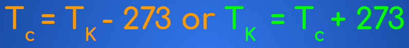
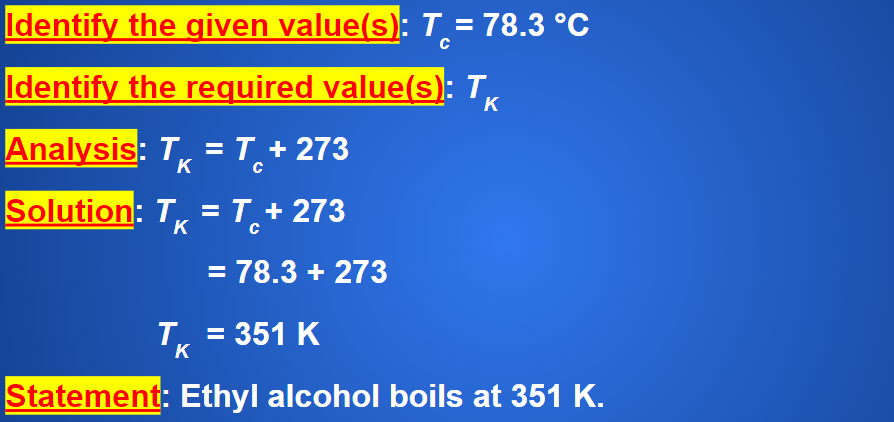
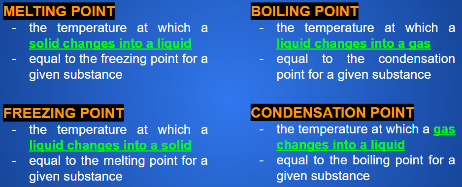

Warmth and Coldness
When you dip your toe into a swimming pool to test the warmth of the water before jumping in, you are using your sense of touch to determine how hot or cold a substance is.
While touch helps us sense large differences in warmth or coldness, small differences can go unnoticed.

During the eighteenth century, scientists thought that warmth and coldness were produced by a massless fluid called “caloric.” Scientists believed that the amount of this fluid in the universe was constant and that it flowed naturally from warmer objects to colder objects.
In 1798, English scientist Benjamin Thompson (known as Count Rumford) published his investigations showing that caloric did not exist. Caloric was not flowing from a warmer object to a colder one but was being created by rubbing two objects together. You might experience the same effect by rubbing the palms of your hands together very rapidly

Benjamin Thompson
(1753 - 1814)
Tabs
The theory that describes the motion of molecules or atoms in a substance in terms of kinetic energy.

What can you tell about Figures (a), (b), and (c)?
(a) Particles in solids are very close together and can only move back and forth within a very limited range. According to the kinetic molecular theory, an increase in the motion of the particles of a substance makes the substance feel warmer; a decrease in the motion makes the substance feel colder.
(b) Particles in liquids are very close together but are able to move and slide past one another. The particles have more kinetic energy than those of a solid. This causes the particles to vibrate even more rapidly and also to move from place to place, although not very far from each other.
(c) Particles in gases can move freely past each other. The particles of a gas have more kinetic energy than those of liquids or solids. This causes them to vibrate and move from place to place much farther and more rapidly than the particles of liquids or solids.
The total quantity of kinetic and potential energy possessed by the atoms or molecules of a substance measured using the SI unit of joules. When an object or substance absorbs thermal energy, it warms up; when it releases thermal energy, it cools down thermal energy can be transferred from a warmer object to a colder object, but not from a colder object to a warmer object. The thermal energy of an object can also be transformed into other forms of energy.
If thermal energy is responsible for the warmth or coldness of an object, how can we measure the amount of thermal energy that an object has?
Callout
Temperature and Thermometers
Unfortunately, there is no way to measure the total amount of thermal energy in an object, because it is impossible to measure the kinetic energy and potential energy of EVERY particle within the object. However, there is a way to measure the AVERAGE kinetic energy of the particles, which gives us an indication of how hot or cold an object is.
Tabs
a measure of the average kinetic energy of the particles in a substance often measured using a mercury or an alcohol thermometer.
Notice that temperature is a measure of AVERAGE kinetic energy, NOT TOTAL kinetic energy. The reason is that the particles of an object at a particular temperature have different amounts of kinetic energy; some particles move faster than others.

(a) The particles of a thermometer in a colder environment move with less vigor and occupy a smaller volume than in (b) a warmer environment.
Celsius scale (°C)
- named after Anders Celsius, a Swedish scientist the temperature scale based on the boiling point and freezing point of water pure water freezes at 0 °C and boils at 100 °C
Fahrenheit scale (°F)
- invented by Daniel Gabriel Fahrenheit the temperature scale based on the boiling point and freezing point of brine pure water freezes at 32 °F and boils at 212 °F
Kelvin scale (K)
- created by Irish scientist William Thomson, also known as Lord Kelvin the temperature scale was developed using absolute zero as the point at which there is virtually no motion in the particles of a substance lowest point at 0 K (absolute zero) which is approximately -273 °C
Convert from the Kelvin Scale to the Celsius Scale (and vice versa)

Example
Ethyl alcohol boils at a temperature of 78.3 °C. What is this temperature in kelvins?

Practice
Ethyl alcohol freezes at 159 K. What is this temperature in degrees Celsius?
Thermal Energy, Temperature, and Physical State
